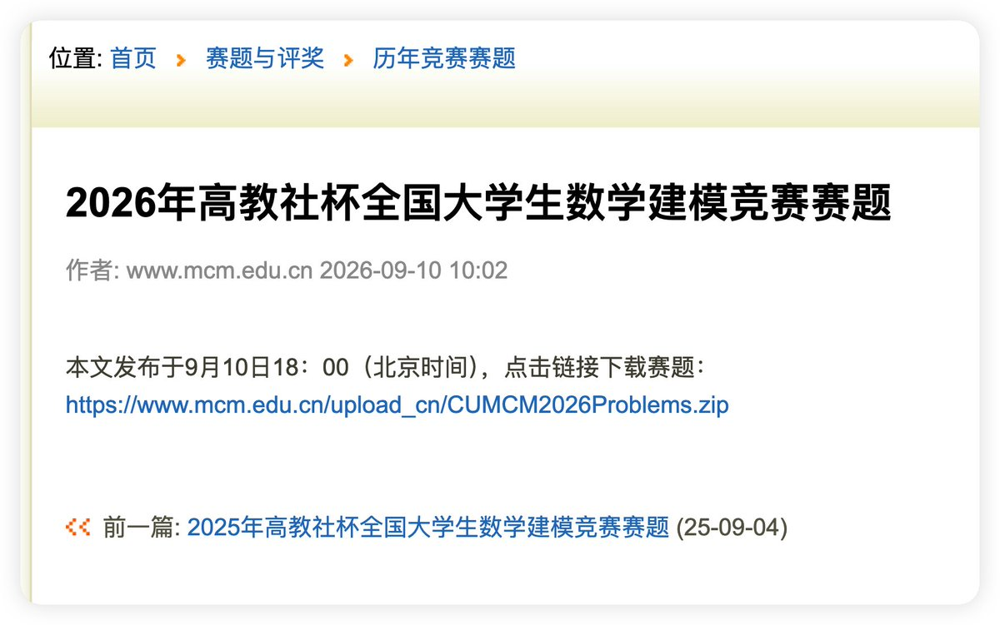

奶昔🥤
@realNyarime
@42mayfly 原来如此，不过我觉得泄露的应该是中转站比较严重，特别是国内的多家科技公司、大学、央企、事业单位、政府部门等涉及国家安全的企业都在用，这已经是危害国安的东西了，估计接下来中转站会跟VPN机场一样受到制裁

cliche
@42mayfly
@realNyarime 报告窗口截止在 2026 年 8 月。数模题目 9 月 10 日傍晚才公布。一份汇编八个月调查、里面还有也门试射和两百页军品方案的文件，不可能是把开赛几小时内的学生对话临时改写成案例。多查资料分析一下，不要人云亦云。🐶 https://t.co/sK4qHUswIa